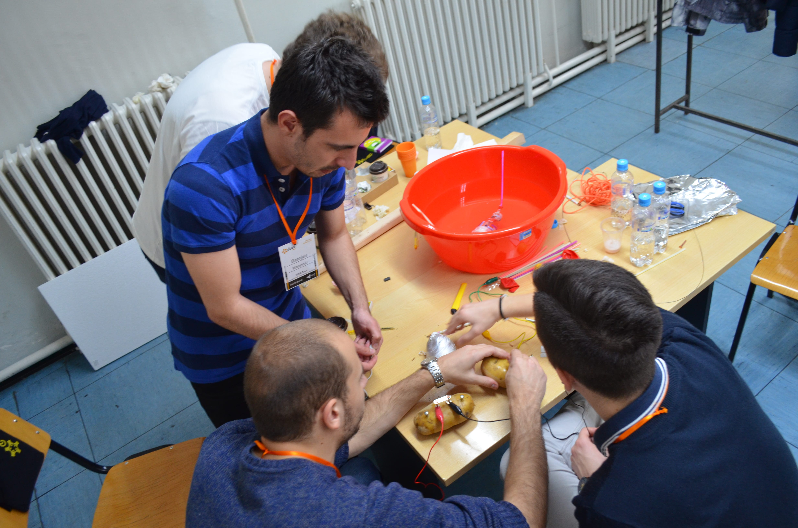
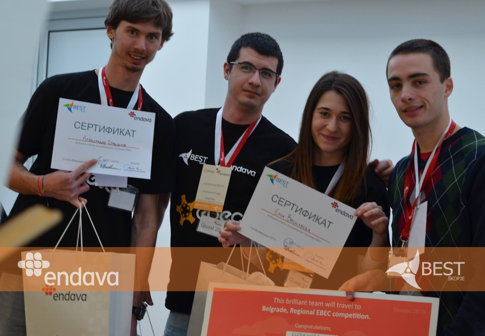

Успешно заврши EBEC 2016!
По долгите подготовки и големата посветеност на организаторите, официјалното отворање, форумската расправа и двата натпреварувачки денови, EBEC инженерскиот натпревар за 2016 година имаше успешен крај. Со задоволство ви ги претставуваме победничките тимови од двете натпреварувачки категории: Во категоријата Case Study победи тимот IEEE - Fantastic four. Им честитаме на Ивона Ристова, Гоце Симоновски, Мими Прочкова и Антонио Филипоски. Во категоријата Team Design од вториот натпреварувачки ден на EBEC, победи тимот R2D2 составен од натпреварувачите Стефан Алексовски, Марјана Петковска, Столе Јовановски и Надежда Аврамовска. На двата тима им посакуваме многу среќа и успех на регионалниот EBEC натпревар кој ќе се одржи во Подгорица. Кратка сумација од најдобрите моменти на EBEC 2016 можете да погледнете на следниов линк.
Објавено фебруари 2016
Case study

На 17 февруари започна натпреварувањето во првата категоријата на EBEC - Case Study. Тимови кои се натпреваруваа во Case Study беа: Cimeri, IEEE - Fantastic Four, Noe и Shannon. Овогодинешниот теоретски проблем "Skopje Reborn", претставуваше голем предизвик за натпреварувачите, но и за жирито кое по 15 минутните презентации на секој од тимовите требаше да одлучи кој ќе е победникот во оваа категорија. Следниот ден тимовите Kompir Co, Glen Coco, IEEE и R2D2 се натпреваруваа во категоријата Team Design.
Team design
Голема благодарност до жирито кое објективно и професионално ги оцени сите задачи, во чиј состав беа:
Д-р Кирил Лисичков - Професор Технолошко-металуршки факултет, институт за процесно и контролно инженерство
Д-р Оливер Зајков - Професор при Природно математичкиот факултет, институт за физика
Доц. Д-р. Дивна Пенчиќ - Професор при Архитектонски факултет Скопје
Андреј Апостолски - Претставник од Habitat for Humanity Macedonia
Официјално отворање и форумска расправа
Официјалното отворање на EBEC 2016 беше одбележано со обраќањето на претседателот на БЕСТ Скопје, продеканот на наука Александар Ристески при Факултетот за електротехника и информациски технологии (ФЕИТ) и главните координатори на настанот. Потоа се одржа форумската расправа на тема ‚‚Како до проактивен кадар?” за која фасцилитатор беше Стефан Серафимоски, активен член на БЕСТ Скопје. Во форумската расправа се вклучија студенти од техничките факултети како и претставници од компании.

Успешно заврши EBEC 2015!
После неколку месечните припреми, официјалното отворање и форумската расправа, и двата натпреварувачки денови, EBEC инженерскиот натпревар успешно заврши. Ги имаме двата победнички тимови кои ќе продолжат на регионално ниво во Белград и тоа: во категоријата Case Study победи тимот Eclipse кој го сочинуваат натпреварувачите Дејан Божиновски, Ѓорѓи Јанчески, Филип Давковски и Надежда Аврамовска, а додека во категоријата Case Study победи тимот Clockwork Orange кој се состои од Митко Милошев,Александар Старделов, Ема Василевска, Александар Митиќ.
Објавено фебруари 2015
Case study

Тимот Eclipse победници во категоријата Case Study
Team design
Тимот Clockwork Orange победници во категоријата Team Design
EBEC Balkan 2014
БЕСТ Скопје заедно со тимот составен од Филип Божиновски, Никола Анѓелковиќ, Сашо Јадровски и Кристина Блажевска ја испишуваат историјата на Инженерскиот Натпревар. По втор пат тимот од Скопје, со освено прво место на регионалниот натпревар во Ниш во категоријата Case Study, тимот Fast Forward ја има честа да ги брани боите на LBG Skopje на финалниот натпревар во Рига, Латвија ова лето. Настанот ќе се одржи во периодот измеѓу 1-9 Август и нашите најдобри ќе се обидат и по трет пат да бидат прогласени за победници. БЕСТ Скопје им честита за победата и им посакува многу среќа и успех на финалниот натпревар.